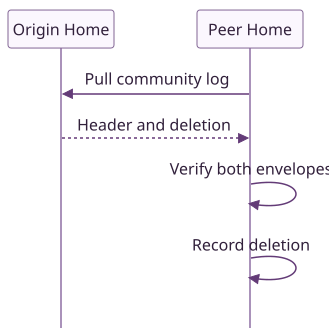

Signed events and deletion
A post has a stable ID even after its text is erased. That lets a peer verify both the original publication and the author’s decision to delete it.
Verifying an erased post
A peer that has never seen the live post can receive its signed header together with the deletion envelope. It checks the event identities, the authorizations and the Home receipts before recording the deletion.

The device signature
A signed event contains an ID, a typed payload and an Ed25519 signature. The payload identifies the Home, community, signing device, sequence, creation time and action. Portable writers include an account grant. Rust serializes the typed data in canonical field order. The client signs a domain-separated event ID and sends the original event bytes on retry.
Content commitments
For a version-4 post or reply, BLAKE3 commits to a random 32-byte salt and the encoded action. The permanent header holds the commitment and a flag identifying a reply. Its nonce field is empty. The event ID hashes this header. A reader with the live content can recompute the commitment. Votes and deletions retain their complete action in the header.
Acceptance and erasure
The Home signs the event ID, originating Home and acceptance time. A later deletion names the target event ID and must come from its owner. A newly authorized device can delete an earlier device’s post for the same account. Participating Homes remove the original text and salt after verification. Identifiers, timing and the signed proof remain.
Content actions
The action’s kind distinguishes post, headline-bearing postV2, reply, vote and delete. erased represents the retained header. The current signing domain separates these events from those of the earlier public Home generation.